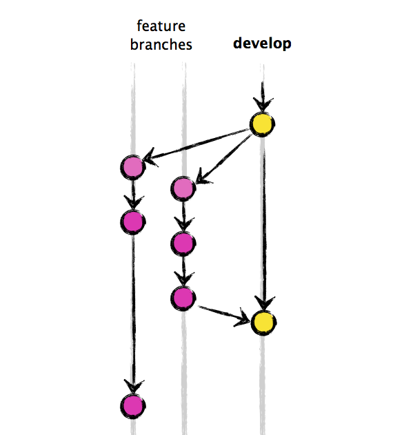
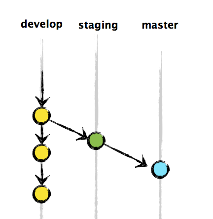
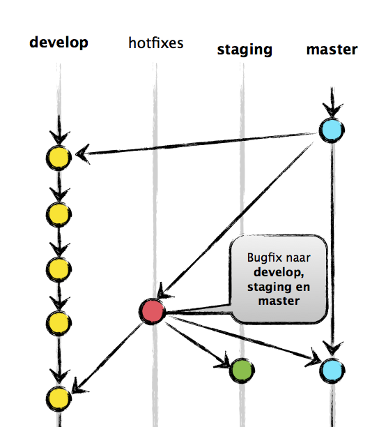
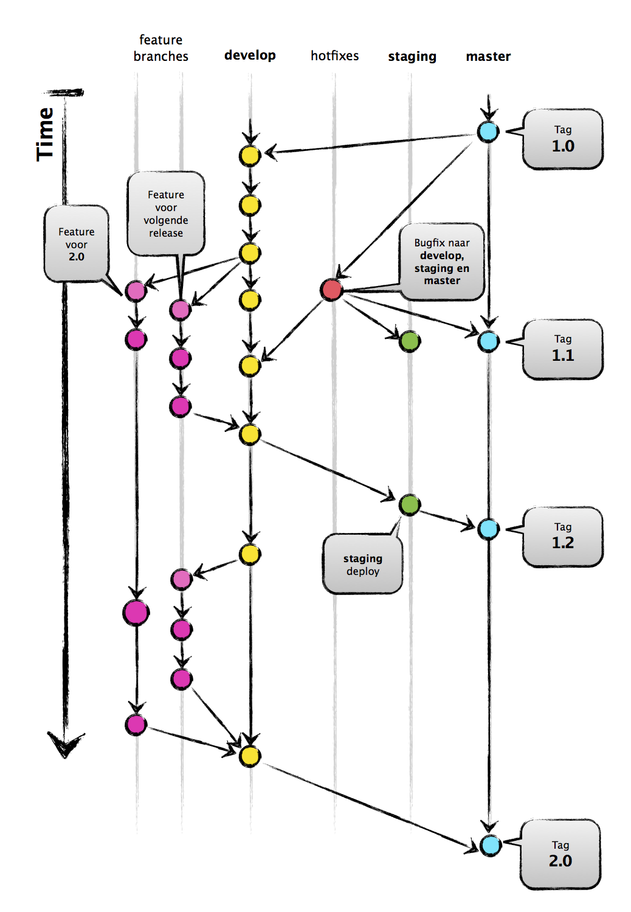

git
Workflow
Spingit
for wizards on steroids
Waarom?
- We ♥ standards, let's have a lot of them
- Behoefte aan eenduidigheid
- Beide voor en nadelen
-
Moet helpen tijdens de ontwikkeling
Niet forceren het process aan te passen - Verschillende type software
(mobile, web, RingCredible/Jabba)
Waarom?
We ♥ standards, let's have a lot of them- Behoefte aan eenduidigheid
- Beide voor en nadelen
-
Moet helpen tijdens de ontwikkeling
Niet forceren het process aan te passen - Verschillende type software
(mobile, web, RingCredible/Jabba)
Wat zijn de "uitdagingen" nu?
Waar we het over gaan hebben
- Situatie nu
- Voor- nadelen bekeken opties
- Structureren van branches
- But how?
- Uitzonderingen...
- Pull request
- Rebase vs Merge & fast-forward
#1 Situatie nu
Release branch
"Wat staat er op dit moment in productie?"
masterreleaseproduction- ...
mastervan 3 weken terug
ofwel commit:6a8cd58903
Develop/sprint branch
"Waar zitten alle finished features in voor de volgende release?"
masterdevelopdevelopment_vostaging
Feature branches
"Waar zitten nieuwe features (klaar of niet) in?"
nieuwe-featurefeature/nieuwe-featurefeatures/nieuwe-featuremasterdevelop
WUT
#2 Voor- nadelen bekeken opties
Gitflow vs Github-flow
- gitflow Branche structuur
- gitflow Hotfix flow
- github-flow Pull Requests/code review
- gitflow/github-flow Taging
- gitflow/github-flow master == productie
TODO: it's a tie! now what?
Wat missen beide flows
- acceptatie omgeving?
- version bump/tag Android?
- iOS Ad Hoc taggen/acceptatie omgeving?
#3 Structureren van branches
Start situatie
master
wat er nu in productie staat
staging
wat er nu in de acceptatie omgeving staat
develop
alle afgeronde features voor een volgende release
Features/hotfixes/tags
feature/manage-users-for-backend
een nieuwe feature waar aan gewerkt wordt
hotfix/panic-fix
quick fix die asap live moet
1.0.1
tag naamgeving voor een release
ringcredible/1.0.1
alternatieve tag naamgeving voor een release
#4 But how?
Flows
- feature → develop
- develop → staging → master
- hotfix
1. feature → develop

1. feature → develop
$ git checkout -b feature/admin-login develop
# work work work, commit commit commit, rebase op develop, FINISHED
$ git push origin feature/admin-login
# create pull request ... ?
we komen zo terug op rebasen en pull requests
2. develop → staging → master
2. develop → staging → master
# develop --> staging
$ git checkout staging
$ git merge develop
$ git push origin staging
# deploy...
# staging --> master
$ git checkout master
$ git merge staging
$ git push origin master
# deploy...
# create new version tag 1.1
$ git tag -a 1.1
$ git push origin 1.1
paniek!
hotfix nodig voor productie!

3. Hotfix flow
3. Hotfix flow
# create hotfix branch from master
$ git checkout -b hotfix/bsod-fix master
# fix, fix, commit, commit
$ git push origin hotfix/bsod-fix
# pull request
# after merge, pull and checkout master
# create new version tag 1.1.1
$ git tag -a 1.1.1
$ git push origin 1.1.1
$ git checkout develop
$ git merge master
# TODO!!!!
# repeat above 2 commands for staging
Complete flow
Dus
featuresgaan dedevelopbranch in voor een volgende releasedevelopkan altijd naarstagingomdat hier volledige features in zitten- bij akkoord kan
stagingnaar demasterbranch (productie) - bij een productie release altijd een
tag(ook na eenhotfixrelease)
#5 Uitzonderingen
try {} catch(Exception) {}
Acceptatie mobile apps
Android: staging → beta
iOS: staging → adhoc
bekijken of dit werkt...
Meerdere klanten same code base
Bij een release taggen als<klant>/1.0.1
voorbeeld: <ringcredible>/1.0.1
Remember this?

Code review
Voordelen
- Team is technisch bekend met nieuwe features
- Github PR interface
- Minder duplicate code
- Je leert nieuwe dingen
- "vergeet je niet ..."
Nadelen Nadeel
- Kost wat extra tijd
best practice
+ Merge van een ander
- maar niet van jezelf
PRO TIPS
Zie comments niet als kritiek
We werken allemaal graag aan en in een mooi product
Geef elkaar de tijd te reviewen
Can we ship it? Can we ship it? Can we ship it?
#6 Rebase vs Merge & fast-forward
Start point

Make it work!
$ git checkout -b feature/work-by-A develop
$ git commit -am "10:30 - 1st work by A"
$ git commit -am "11:00 - 2nd work by A"
$ git checkout -b feature/work-by-B develop
$ git commit -am "10:45 - 1st work by B"
$ git commit -am "11:15 - 2nd work by B"
Fast forward

$ git merge --ff feature/work-by-B
Fast forward

$ git merge --ff feature/work-by-B
$ git merge --ff feature/work-by-A
# merge conflict
Fast forward (first rebase)

# rebase feature/work-by-B from develop
$ git merge --ff feature/work-by-B
Fast forward (first rebase)

# rebase feature/work-by-B from develop
$ git merge --ff feature/work-by-B
# rebase feature/work-by-A from develop
$ git merge --ff feature/work-by-A
No Fast forward (with rebase)

# rebase feature/work-by-B from develop
$ git merge --ff feature/work-by-B
# rebase feature/work-by-A from develop
$ git merge --ff feature/work-by-A
No Fast forward (with rebase)

# rebase feature/work-by-B from develop
$ git merge --no-ff feature/work-by-B
# rebase feature/work-by-A from develop
$ git merge --no-ff feature/work-by-A